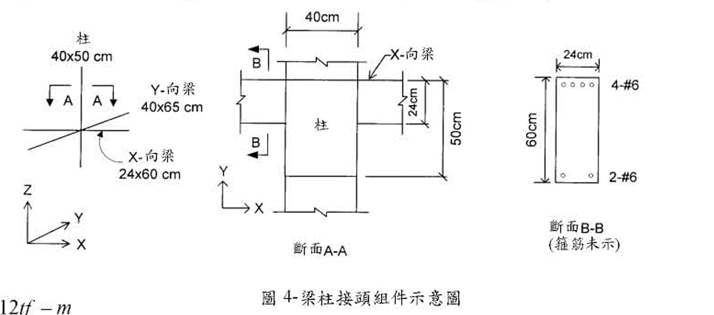
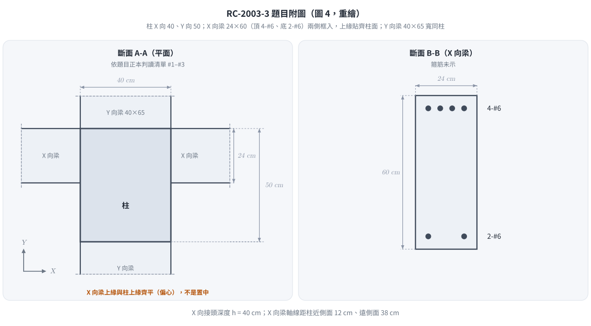
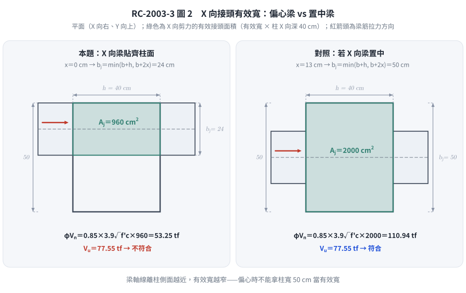

📄 題目正本：考卷原文・附圖・判讀清單（已確認）
RC-2003-3 題目正本
本檔只記錄考卷上寫了什麼、圖上畫了什麼，不含任何解法。解析見同資料夾
RC-2003-3.md。
判讀清單已經使用者確認（凍結）；本檔原則上不再修改（改動須回考卷原圖並記 log）。
| 項目 | 內容 |
|---|---|
| 考卷 | raw/exams/RC-2003_鋼筋混凝土設計與預力.pdf 第 1 頁（掃描影像，正面＋背面同一頁），背面第三題 |
| 考年 | 民國 92 年（2003） |
| 配分 | 20 分 |
| 附圖 | RC-2003-3-fig-1.png（圖 4：梁柱接頭組件示意圖） |
| 判讀狀態 | 已確認（2026-11-14 使用者確認；影響答案項目使用者選擇：#1 柱 X 向 40／Y 向 50、#2 X 向梁上緣與柱面齊平（偏心）；轉錄 2026-11-14；PyMuPDF 110 dpi 全頁目視，附圖 300 dpi 局部放大（掃描原生約 96 dpi，放大不增細節）；盲讀後才比對既有解析） |
1. 考卷原文（逐字）
三、有一耐震鋼筋混凝土中間層內跨之梁柱接頭組件如圖 4 所示，試按民國 92 年 1 月 1 日生效，由營建雜誌社發行之「結構混凝土設計規範〔掃描疊字，此處缺「」設計之。（」〕20 分）
已知條件：
㈠ $f'_c = 280\ kgf/cm^2$，常重混凝土
㈡ $f_y = 4{,}200\ kgf/cm^2$
㈢ 樓層高度 350 cm
㈣ 縱向（X-向）梁之尺寸為 $24 \times 60\ cm$，其配置 4 根 #6 頂層鋼筋和 2 根 #6 底層鋼筋，而縱向梁之彎矩標稱計〔照考卷原文〕 $M_n^- \approx 24\ tf-m$，$M_n^+ \approx 12\ tf-m$
㈤ 橫向（Y-向）梁之尺寸為 $40 \times 65\ cm$
㈥ 柱之尺寸為 $40 \times 50\ cm$
㈦ #6 鋼筋，$d_b = 1.91\ cm$，$A_b = 2.87\ cm^2$
㈧ 接頭箍筋之配置符合規範要求（柱筋未示）。
試估計接頭在 X-向之抗震作用剪力 $V_u$ 之值，及接頭在 X-向之耐震標稱〔強度〕$V_n$ 之值，並據以查驗其是否符合規範對梁柱接頭〔掃描缺字〕耐〔掃描缺字〕
註：掃描件最後一行文字斷裂，只看得到「查驗其是否符合規範對梁柱接頭」與一個「耐」字；「標稱」與 $V_n$ 疊印。題意可讀為：求 $V_u$、求 $V_n$、檢核接頭剪力是否符合耐震規定。
2. 考卷給的公式、附表與參數
- 題文數值：見上；規範指定「民國 92 年 1 月 1 日生效、營建雜誌社發行之『結構混凝土設計規範』」。
- 考卷未印任何公式。
- 沒有給：梁筋拉力用 $f_y$ 或 $1.25f_y$、接頭圍束係數 $\gamma$、$\phi$、柱軸力、梁淨跨、樓層高 350 cm 是否為中心距（題文只寫「樓層高度」）、柱筋配置（「柱筋未示」）、X 向梁 $d$。
- 卷首注意事項：㈠不必抄題，作答時請將試題題號及答案依照順序寫在試卷上，於本試題上作答者，不予計分。㈡可以使用電子計算器，但需詳列解答過程。
3. 附圖

圖面文字照錄：柱 40x50 cm、Y-向梁 40x65 cm、X-向梁 24x60 cm、A、A、Z、Y、X、40cm、X-向梁、B、B、柱、24cm、50cm、斷面A-A、24cm、60cm、4-#6、2-#6、斷面B-B (箍筋未示)、圖 4-梁柱接頭組件示意圖。
4. 判讀清單
「把握」標不確定者請優先確認；解讀類項目（題目用字的意思）另標「解讀」。
| # | 項目 | 判讀 | 圖上／題文依據 | 把握 |
|---|---|---|---|---|
| 1 | 柱斷面方向 | 柱 X 向 40 cm、Y 向 50 cm；X 向剪力的接頭深度 $h = 40$ cm | 斷面 A-A 座標軸 X 向右、Y 向上；40cm 尺寸線為水平（量柱左右兩側），50cm 尺寸線為垂直（右側）；Y-向梁 40 cm 寬由上下框入、兩側與柱左右緣齊，亦與柱 X 向 40 cm 相符 |
確定（解讀）（影響答案）；使用者確認 |
| 2 | X-向梁平面位置 | X-向梁（寬 24 cm）上緣與柱上緣（+Y 面）齊平，不置中；梁軸線距柱近側面 12 cm、距遠側面 38 cm | 斷面 A-A：X-向梁上緣線、24cm 尺寸線上端、50cm 尺寸線上端三者同一水平線（300 dpi 目視）；24cm 下端與梁下緣對齊；左右兩側 X-向梁同一位置 |
確定（解讀）（影響答案）；使用者確認 |
| 3 | 接頭位置 | 中間層、內跨：X 向兩側皆有 X-向梁、Y 向兩側皆有 Y-向梁（四面框梁） | 題文「中間層內跨」；斷面 A-A 四面皆有梁，梁端畫斷線符號 | 確定 |
| 4 | X-向梁斷面 | $24 \times 60$ cm，頂 4-#6、底 2-#6；$A_{s,top}=4 \times 2.87$、$A_{s,bot}=2 \times 2.87$ cm² | 題文㈣㈦；斷面 B-B | 確定 |
| 5 | X-向梁 $d$ | 沒有給；斷面 B-B 未標保護層或筋心位置 | 斷面 B-B 只有 24cm、60cm 兩條尺寸 | 確定 |
| 6 | 梁彎矩 | 「彎矩標稱計」＝彎矩標稱強度 $M_n^- \approx 24$、$M_n^+ \approx 12$ tf-m（題文給定值） | 題文㈣ | 確定（解讀） |
| 7 | Y-向梁 | $40 \times 65$ cm；不參與 X 向剪力計算，只影響圍束判定 | 題文㈤ | 確定 |
| 8 | 樓層高度 | 350 cm；題文只寫「樓層高度」，未寫中心距或淨高 | 題文㈢ | 確定 |
| 9 | 所求 | ① X 向接頭抗震作用剪力 $V_u$；② X 向接頭耐震標稱強度 $V_n$；③ 據以查驗是否符合規範 | 題文末段（掃描缺字，見 §1 註） | 確定（解讀） |
| 10 | 考卷沒有給 | 梁筋應力取 $f_y$ 或 $1.25f_y$、$\gamma$、$\phi$、柱軸力 | 全題 | 確定 |
轉錄：2026-11-14（RC-U3-3 題目正本推廣・批 1）
確認：2026-11-14 使用者確認（RC-U3-3 題目正本推廣・批 1，關卡一）
考題編號：RC-2003-3
主分類： RC-U3-3 韌性要求與耐震設計
副分類： 無
設計法： USD
標籤： 梁柱接頭 內部接頭 水平剪力Vjh 有效接頭寬度bj 接頭剪力強度 γ係數 T_top+T_bot-Vcol 中間層內跨 偏心梁 1.25fy 一雙對面圍束 柱方向判讀
1. 題目（考卷原文見題目正本）
考卷原文、公式／附表、附圖與判讀清單（已確認）見
RC-2003-3-problem.md。本節只列解題時最容易讀錯的地方與本解使用的記號；題意以題目正本為準。

重繪自考卷圖 4，依題目正本判讀清單 #1–#4。本圖攔下兩個讀錯：柱的 40 cm 是 X 向（A-A 的 X 軸向右，40cm 為水平尺寸），X-向梁貼齊柱的一側而非置中。
常見誤讀
| 項目 | 正確判讀 | 常見誤讀 |
|---|---|---|
| 柱斷面方向 | X 向 40 cm、Y 向 50 cm → X 向剪力的接頭深度 $h = 40$ cm | 讀成 X 向 50（本庫舊解），接頭深度與 $b_j$ 都算錯 |
| X-向梁平面位置 | 上緣與柱 +Y 面齊平（偏心），梁軸距柱近側面 12 cm | 當成置中，每側延伸 13 cm |
| 梁筋拉力 | 耐震接頭以 $1.25f_y$ 計算（題目沒給，須依規範） | 用 $f_y$（本庫舊解） |
| 「彎矩標稱計」 | 題給梁的標稱彎矩強度 $M_n^-\approx24$、$M_n^+\approx12$ tf-m | 當成設計彎矩或可能強度直接用 |
| 題目所問 | X 向 $V_u$、X 向耐震標稱強度 $V_n$，據以查驗是否符合 | 只求 $b_j$ |
| 規範 | 考卷指定民國 92 年 1 月 1 日生效、營建雜誌社發行之規範；本庫依現行台灣規範解題（差異見 §5） | 寫成營建署頒訂、題目寫成「附裏」 |
本解記號： $h$＝柱在 X 向的深度（接頭深度）＝40 cm；$b_c$＝柱在 Y 向的寬度＝50 cm；$b_w$＝X 向梁寬＝24 cm；$x$＝X 向梁軸線到柱近側面的垂直距離＝12 cm；$T_1$、$T_2$＝接頭兩側 X 向梁頂筋、底筋拉力；$H$＝樓層高 350 cm（視為柱反曲點間距）。
2. 考題核心精神與出題者意圖
核心觀念： 梁柱接頭水平剪力 $V_u$ 由接頭兩側梁筋拉力（取 $1.25f_y$）減去柱剪力得到；接頭強度 $V_n=\gamma\sqrt{f'_c}A_j$，其中有效寬度 $b_j$ 受梁的偏心限制，$\gamma$ 依哪幾個面真正被梁圍束決定。
出題者測驗：
- 讀圖：柱哪一向是 40、X 向梁是否置中
- 耐震接頭剪力需求的組成（$1.25f_y$、扣柱剪力）
- 偏心梁的有效接頭寬度 $b_j=\min(b_w+h,\ 2x)$
- 圍束判定：框入梁寬須 $\ge\frac34$ 該面寬才算圍束
3. 解題戰略地圖與陷阱分析
計算步驟：
- $T_1=1.25A_{s,top}f_y$、$T_2=1.25A_{s,bot}f_y$
- $M_{pr}\approx1.25M_n$（題目只給 $M_n$），柱剪力 $V_{col}=\Sigma M_{pr}/H$
- $V_u=T_1+T_2-V_{col}$
- $b_j=\min(b_w+h,\ 2x)\le b_c$，$A_j=b_jh$
- 判定圍束面 → $\gamma$ → $V_n$、$\phi V_n$，與 $V_u$ 比較
關鍵陷阱：
| # | 陷阱 | 說明 |
|---|---|---|
| ① | 柱方向讀反 | A-A 的 40cm 尺寸線是水平的、X 軸向右 → X 向 40 |
| ② | 偏心梁的 $b_j$ | 梁貼齊柱面時 $x=b_w/2=12$，$2x=24$，$b_j$ 只剩梁寬 |
| ③ | 四面都有梁 ≠ 四面圍束 | X 向梁 24 cm < $\frac34\times50=37.5$ cm，X 向兩面不算圍束；Y 向梁 40 cm＝面寬 40 cm，算圍束 → 一雙對面 |
| ④ | 拉力用 $f_y$ | 耐震接頭規定用 $1.25f_y$ |
| ⑤ | $V_{col}$ 不扣 | 柱剪力與梁筋拉力方向相反，須扣除 |
3.5 變數層次分析（Variable Hierarchy Analysis）
複習提示：第一次解題後，在每個卡住的知識點旁標記
⚠；第二次複習時只看有⚠的項目。
最終目標
X 向接頭剪力 $V_u$、標稱強度 $V_n$，檢核 $V_u\le\phi V_n$。
本題關鍵公式（依計算順序）
$$\text{Step 1: } T_1=1.25A_{s,top}f_y,\quad T_2=1.25A_{s,bot}f_y$$
$$\text{Step 2: } V_{col}=\frac{1.25\,(M_n^-+M_n^+)}{H}$$
$$\text{Step 3: } V_u=\boxed{T_1}+\boxed{T_2}-\boxed{V_{col}}$$
$$\text{Step 4: } b_j=\min\!\left(b_w+h,\ 2x\right)\le b_c,\quad A_j=\boxed{b_j}\,h$$
$$\text{Step 5: } V_n=\gamma\sqrt{f'_c}\,A_j,\quad \phi V_n\ \text{vs}\ V_u$$
L1：題目直接給定
| 符號 | 數值 | 說明 |
|---|---|---|
| $A_{s,top}$ | $4\times2.87=11.48$ cm² | X 向梁頂 4-#6 |
| $A_{s,bot}$ | $2\times2.87=5.74$ cm² | X 向梁底 2-#6 |
| $M_n^-$、$M_n^+$ | 24、12 tf·m | X 向梁標稱彎矩強度 |
| $H$ | 350 cm | 樓層高度 |
| $h$ | 40 cm | 柱 X 向（判讀 #1） |
| $b_c$ | 50 cm | 柱 Y 向（判讀 #1） |
| $b_w$ | 24 cm | X 向梁寬 |
| $x$ | 12 cm | X 向梁貼齊柱面，梁軸距近側面（判讀 #2） |
| $f'_c$、$f_y$ | 280、4,200 kgf/cm² |
L2：需知識點推導
| 符號 | 公式／來源 | 卡關? |
|---|---|---|
| $T_1$ | $1.25\times11.48\times4200=60{,}270$ kgf＝60.27 tf | |
| $T_2$ | $1.25\times5.74\times4200=30{,}135$ kgf＝30.14 tf | |
| $V_{col}$ | $1.25\times(24+12)/3.5=12.86$ tf | |
| $V_u$ | $60.27+30.14-12.86=77.55$ tf | |
| $b_j$ | $\min(24+40,\ 2\times12)=24$ cm（$\le50$） | |
| $A_j$ | $24\times40=960$ cm² | |
| $\gamma$ | 3.9（一雙對面受圍束；現行台灣規範） | |
| $V_n$ | $3.9\times\sqrt{280}\times960=62.65$ tf | |
| $\phi V_n$ | $0.85\times62.65=53.25$ tf |
L3：深層知識（不懂就卡住）
| 知識點 | 說明 | 卡關? |
|---|---|---|
| 為何用 $1.25f_y$ | 梁端塑鉸時鋼筋應變硬化，接頭承受的是可能強度對應的拉力 | |
| $b_j$ 的偏心限制 | 有效寬度不超過「梁寬＋接頭深度」與「梁軸到柱側面較近距離的 2 倍」兩者較小值 | |
| 圍束的定義 | 框入梁寬至少覆蓋該接頭面寬的 3/4 才算該面受圍束 | |
| $\gamma$ 的單位制 | 現行台灣規範（kgf/cm²）5.3／3.9／3.2，對應 SI 制 1.7／1.2／1.0、psi 制 20／15／12 |
4. 步驟化詳細計算過程
Step 1 梁筋拉力（$1.25f_y$）
$$T_1=1.25A_{s,top}f_y=1.25\times11.48\times4{,}200=\boxed{60{,}270\ \text{kgf}=60.27\ \text{tf}}$$
$$T_2=1.25A_{s,bot}f_y=1.25\times5.74\times4{,}200=\boxed{30{,}135\ \text{kgf}=30.14\ \text{tf}}$$
一致性核對：由 $M_n^-=A_sf_y(d-a/2)$ 反推 $a=\dfrac{11.48\times4200}{0.85\times280\times24}=8.44$ cm、$d=\dfrac{24\times10^5}{48{,}216}+\dfrac{8.44}{2}=54.0$ cm，與梁高 60 cm 相符。
Step 2 柱剪力
接頭兩側梁端同時達可能彎矩強度，取 $M_{pr}\approx1.25M_n$（題目只給 $M_n$）；上下柱反曲點在柱中點，柱剪力：
$$V_{col}=\frac{1.25\,(M_n^-+M_n^+)}{H}=\frac{1.25\times(24+12)}{3.5}=\frac{45}{3.5}=\boxed{12.86\ \text{tf}}$$
第二路徑：以 $d=54.0$ cm 精算 $M_{pr}^-=60{,}270\times(54.0-10.55/2)=29.36$ tf·m、$M_{pr}^+$（$d$ 同法由 $M_n^+$ 反推）$=14.84$ tf·m，$V_{col}=44.21/3.5=12.63$ tf，$V_u=77.78$ tf，與主線差 0.3%。
Step 3 接頭水平剪力 $V_u$
$$V_u=T_1+T_2-V_{col}=60.27+30.14-12.86=\boxed{77.55\ \text{tf}}$$
Step 4 有效接頭寬度與面積
X 向梁貼齊柱的 +Y 面：梁軸線到柱近側面 $x=24/2=12$ cm、到遠側面 $50-12=38$ cm。
$$b_j=\min(b_w+h,\ 2x)=\min(24+40,\ 2\times12)=\min(64,\ 24)=\boxed{24\ \text{cm}}\ (\le b_c=50)$$
$$A_j=b_j\,h=24\times40=\boxed{960\ \text{cm}^2}$$

圖 2 X 向接頭有效寬：偏心梁 vs 置中梁。同一根梁只因平面位置不同，$A_j$ 差一倍、結論相反；本圖攔下「偏心梁仍拿柱寬 50 cm 當 $b_j$」的錯誤。
Step 5 圍束判定與 $\gamma$
| 接頭面 | 面寬 | 框入梁寬 | $\ge\frac34$ 面寬？ |
|---|---|---|---|
| 垂直 X 的兩面（X 向梁框入） | 50 cm | 24 cm | $24<37.5$ ✗ |
| 垂直 Y 的兩面（Y 向梁框入） | 40 cm | 40 cm | $40\ge30$ ✓ |
→ 只有一雙對面受圍束，取 $\gamma=3.9$（現行台灣規範，kgf/cm² 制）。
Step 6 標稱強度與檢核
$$V_n=\gamma\sqrt{f'_c}\,A_j=3.9\times16.733\times960=\boxed{62{,}649\ \text{kgf}=62.65\ \text{tf}}$$
$$\phi V_n=0.85\times62.65=\boxed{53.25\ \text{tf}}$$
$$V_u=77.55\ \text{tf}>\phi V_n=53.25\ \text{tf}\quad\Rightarrow\quad\textbf{不符合規範}\ (V_u/\phi V_n=1.46)$$
連標稱強度 $V_n=62.65$ tf 都小於 $V_u$。
改善方向： ① X 向梁改為置中（$x=13$，$b_j=\min(64,\ 50)=50$，$A_j=2{,}000$，$\phi V_n=110.9$ tf，通過）；② X 向梁加寬到 $\ge37.5$ cm 且置中，四面圍束 $\gamma=5.3$；③ 加大柱斷面。
梁筋穿越接頭： 柱平行梁筋方向尺寸 $h/d_b=40/1.91=20.9\ge20$ ✓。
5. 關鍵爭議點與進階探討
1. 結論對各種讀法都穩定
| 讀法 | $V_u$ | $\phi V_n$ | 結論 |
|---|---|---|---|
| 本解（$1.25f_y$、$\gamma=3.9$） | 77.55 | 53.25 | 不符合 |
| 若 $\gamma$ 誤取 5.3 | 77.55 | 72.37 | 不符合 |
| 若拉力只取 $f_y$ | 62.04 | 53.25 | 不符合 |
| 舊解（柱讀反、梁置中、$\gamma=5.3$、$f_y$） | 62.04 | 150.7 | 符合 ✗ |
依題目正本判讀，任何合理的規範取法都得到「不符合」；舊解的「安全餘裕 2.43」來自讀圖錯誤。
2. 規範版本與 $\gamma$
本解依現行建築物混凝土結構設計規範（2023 年版，土木 401-112／ACI 318-19 體系）（根目錄 CLAUDE.md「規範版本」）；考卷指定的民國 92 年規範不採用，差異如下：
| 項目 | 現行台灣規範（本解） | 民國 92 年規範（考卷指定） |
|---|---|---|
| $\gamma$（四面／一雙對面／其他） | 5.3／3.9／3.2 | 5.3／4.0／3.2（psi 制 20／15／12 換算） |
| 一雙對面受圍束時 $\phi V_n$ | 53.25 tf | 54.62 tf |
| 結論 | 不符合 | 不符合 |
圍束面判定的另一種讀法： 若以「框入梁寬 $\ge\frac34$ 有效接頭寬 $b_j$」判定（ACI 318-19 的寫法），X 向梁 24 cm $\ge\frac34\times24$，四面都算受圍束，$\gamma=5.3$、$\phi V_n=72.37$ tf，仍小於 $V_u=77.55$ tf，結論相同。本解採較保守的「梁寬 $\ge\frac34$ 柱面寬」；作答時請以 2023 年版條文核對。
3. 偏心梁在實務上的意義
外牆側的梁常與柱外面齊平，接頭有效寬度會掉到接近梁寬，這是接頭剪力常不足的原因；設計時應優先讓梁置中或加寬梁。
修正日期：2026-11-14（§1 改為指向題目正本；重繪題目附圖 figs/RC-2003-3-fig-1-problem.svg）
修正日期：2026-11-14（題意（判讀）勘誤：柱 X 向 40／Y 向 50、X 向梁與柱面齊平（題目正本 #1、#2，使用者確認）；梁筋拉力改 1.25fy、γ 改一雙對面 4.0；Vu 62.0 → 77.55 tf、φVn 150.7 → 54.62 tf，結論由符合改為不符合；驗證：verify_RC-2003-3.py 重算 13 值 MISMATCHES: 0，柱剪力以由 Mn 反推 d 精算 Mpr 交叉，差 0.3%）
修正日期：2026-11-14（改依現行台灣規範（建築物混凝土結構設計規範 2023 年版）：一雙對面圍束 γ 4.0 → 3.9，V_n 64.26 → 62.65 tf、φV_n 54.62 → 53.25 tf，結論不符合不變；§5 補規範版本對照與圍束判定另一讀法（γ＝5.3 時 φV_n 72.37 tf 仍不符合）；驗證：重算 MISMATCHES: 0）
修正日期：2026-11-14（圖解補繪：圖 2 接頭有效寬（偏心 vs 置中）；向量圖，腳本 gen_RC-2003-3.py 可重跑）